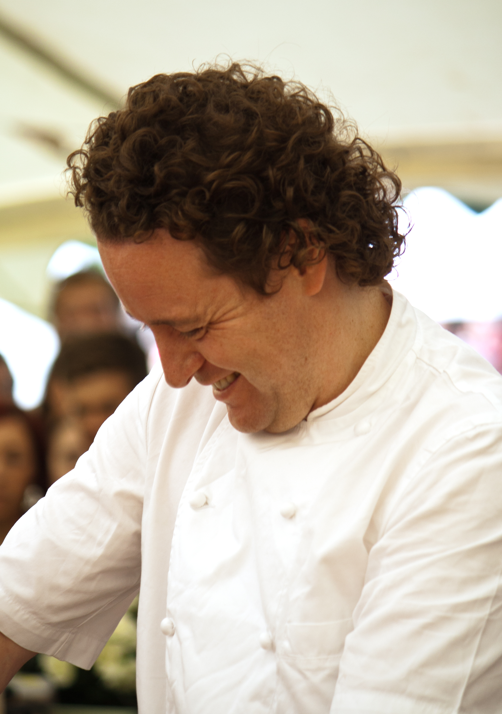

| Meet our executive chef, Alistair Morrison | |
|---|---|
Chef Morrison prides himself on providing you with a meal you won't forget based on locally sourced, organic ingredients. He fuses both traditional and innovative practices in his approach to Scottish food. Chef Morrison grew up in the Loch Ness region. As a boy, he kept his grandmother company as she prepared their family meals. A talented chef herself, his grandmother passed on her knowledge to young Alistair. After excelling in academics, Chef Morrison was accepted to medical school and almost attended, yet he could not shake his yearnings to pursue a career in culinary arts. In following this dream, young Alistair found himself interning and then working in the kitchens of some of the finest Scottish chefs including Gordon Ramsey and Tom Kithen. In 2002, Chef Morrison decided to return to his roots by opening Nessie Restaurant and Lounge. In the years that follow, he has been the recipient of several regional and international culinary awards. In 2015, Nessie Restaurant and Lounge was awarded a Michelin star. Come and discover what locals and international guests have enjoyed over the years and dine with us! |
 |